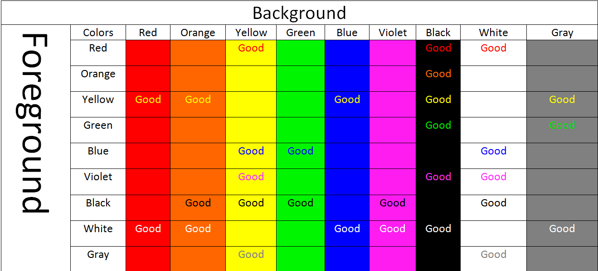

Disability Barrier: Color Contrast
Rachel R. Vasquez posted on the A11y Project website about Color Contrast:
"On the web, color contrast is about finding colors that not only provide maximum contrast, but provide enough contrast between content and the background for anyone with low vision impairments and color deficiencies. This doesn’t mean you have to limit your colors to complementary colors as we just talked about - but the contrast should be kept in mind all the same. The text and non-decorative images need to be clearly legible for everyone regardless of whether they have moderately low vision or color deficiencies. We can check colors for contrast by using one of many contrast tools online."
A contrast ratio of 3:1 is the minimum standard for text and vision. For those with visual impairments however, the contrast ratio standard is 4.5:1. Yet, what does this mean? If colors, and the shades of each color are assigned numbers, then you start putting those next to each other, then you start getting these ratios. The idea is that you have to have enough contrast variation between a background and foreground color so that readability is made simple.
The following chart shows examples of good contrasting colors. Where no text is in a space indicates a contrast ratio below the minimum standard of 3:1.
